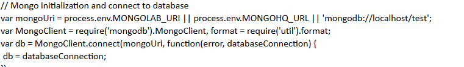
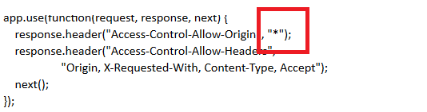
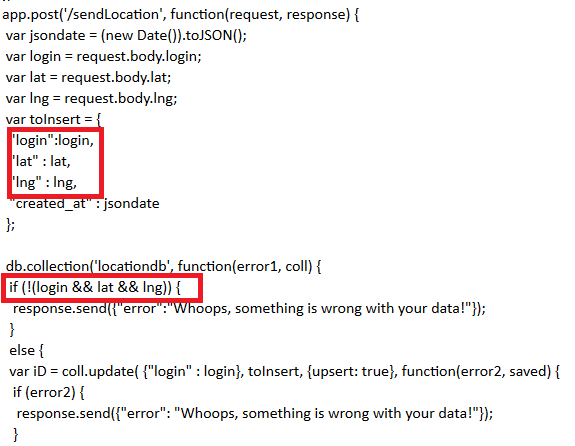

Introduction -
This document analyzes the security flaws found in Lani Godenzis Assignment 3 Server for Real Marauders Map. Following the assignment description, Lanis API is a server-side web application that uses Heroku, Node.js, and the Express web framework to maintain location check-ins (login, latitude, and longitude) for a long period of time.
Methodology -
I first tested the application with the black-box approach as if I had no prior knowledge of the assignment or code. After being unable to expose any vulnerabilities, I inspected the given source code. After inspecting the code by hand, I uncovered numerous vulnerabilities. Having done the assignment, it was easier to identify vulnerabilities by looking for similar security issues I realized were in my server-side code too.
Abstract of Findings -
The code has a few issues relating to user input. While the code accounts for lack of input, the program will crash if invalid input is given, instead of correctly handling said invalid input and outputting a similar error message to that for null input. Additionally, the input is not validated, allowing any kind of malicious scripts or junk files to be tossed into the server. Furthermore, the application has a few scoping issues. The way it is currently written, anyone is able to access and post the data on the server; simple measures can be taken to make it private.
Issues Found -
- Publicly Accessible API
- All pages
- Low: If this API is supposed to be public then this is not really an issue. However, if it is not supposed to be public, then it is a high severity issue.
- No authentication of the caller of the API- anyone can post and see the data. The code supports three API calls, none of which are authenticated.
- The URL is open to the public internet.
- Can be solved by providing an authentication call for the API—a login API call in which the parameters are a username and password. This would return a token back to the caller, all subsequent API calls would require the token to work. Another solution would be to give each user a key up front which would then grant access to the API functions.
- No Database Authentication
- All pages
- Medium: If server security is breached then the database access is compromised.
- No server side authentication to authorize access to MongoDB.
- 
- MongoDB offers various authentication mechanisms. Their latest default authentication method is a challenge and response mechanism (SCRAM-SHA-1).
- Access-Control-Allow-Origin Wildcard
- All Pages
- Low: If this API is supposed to be public then this is not really an issue. However, if it is not supposed to be public, then it is a high severity issue.
- Code uses a wildcard for access-control-allow-origin, allows access from all origins. This is appropriate for a public API but is not appropriate for controlled non-public content.
- 
- Instead of *, the domains that would use should be there instead.
- Vulnerability to XSS attack
- /sendLocation
- High. A vulnerability to an XSS attack compromises the security of the entire application and client.
- There is no type verification for the login, lat, and lng parameters, it is only checked whether they are NULL. Therefore, any type of content could be input into the database, such as a malicious Javascript.
- 
- The solution to this problem is to escape the string values before they are inserted into the database. Escaping the values means that they can no longer be interpreted as code.
- Node.js Server Crash on Invalid JSON
- /sendLocation
- High: Crashing the server will deny access to it and prevent the application from functioning properly.
- There is no validity check for the login, lat, and lng parameters. The check to see if these parameters are NULL does not account for invalid formatting or extraneous characters being inserted into the JSON that has the potential to crash the server.
- See above screenshot for vulnerability #4
The solution to this problem is to validate the input parameters for proper format and range of values. Also, wrapping the JSON.stringify(cursor) portion of this function in a try/catch would help too.
Conclusion -
The application faces basic security vulnerabilities that are easily fixable and likely would have been accounted for initially had the programmer been cognizant of security when creating the application. More specifically, the high and medium severity issues should be addressed immediately. The low severity issues should also be addressed if the API is not intended to be public.